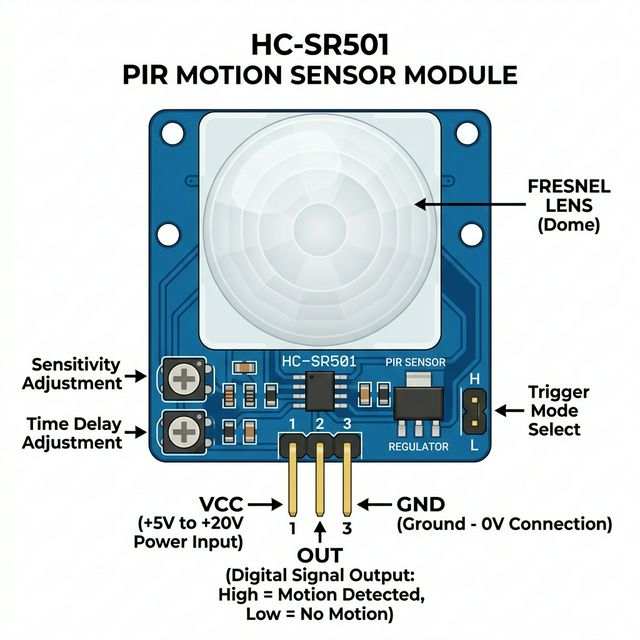

The Passive Infrared (PIR) Sensor is an electronic sensor that measures infrared (IR) light radiating from objects in its field of view. They are most often used in PIR-based motion detectors such as burglar alarms, automated lighting systems, and robotics.

Everything with a temperature above absolute zero emits heat energy in the form of infrared radiation. Human bodies emit a significant amount of IR.
A PIR sensor consists of two main parts:
| Pin | Color Code | Function |
|---|---|---|
| VCC | Red | Power input. Connect to Arduino 5V (accepts 5V to 20V depending on the module). |
| OUT | Yellow / Blue | Digital signal output. Rises to 3.3V (HIGH) when motion is detected, and drops to 0V (LOW) when no motion is detected. |
| GND | Black | Common ground connection. |
To simulate human motion in your OpenHW Studio circuit:
npm run dev backend).OUT pin will immediately go HIGH to trigger your Arduino code.Reading a PIR sensor is exactly the same as reading a simple pushbutton. Because it outputs a clear digital signal, you just need to use digitalRead().
// Define the pin connections
const int pirPin = 2; // The digital pin connected to the PIR sensor's OUT pin
const int ledPin = 13; // The built-in LED on most Arduinos
int motionState = LOW; // Variable to track the current motion state
int val = 0; // Variable to read the pin status
void setup() {
pinMode(pirPin, INPUT); // Declare the PIR sensor as an INPUT
pinMode(ledPin, OUTPUT); // Declare the LED as an OUTPUT
Serial.begin(9600); // Start serial communication at 9600 bps
Serial.println("System Ready. Waiting for motion...");
}
void loop() {
val = digitalRead(pirPin); // Read the current state of the sensor
if (val == HIGH) { // If the OUT pin is HIGH (motion detected)
digitalWrite(ledPin, HIGH); // Turn the LED ON
if (motionState == LOW) {
// We only want to print once when the motion starts
Serial.println("🚨 Motion detected!");
motionState = HIGH; // Update the state
}
}
else { // If the OUT pin is LOW (no motion)
digitalWrite(ledPin, LOW); // Turn the LED OFF
if (motionState == HIGH) {
// We only want to print once when the motion stops
Serial.println("Coast is clear.");
motionState = LOW; // Update the state
}
}
// Small delay to prevent bouncing/jittering
delay(100);
}